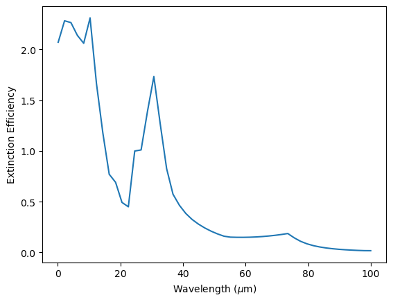
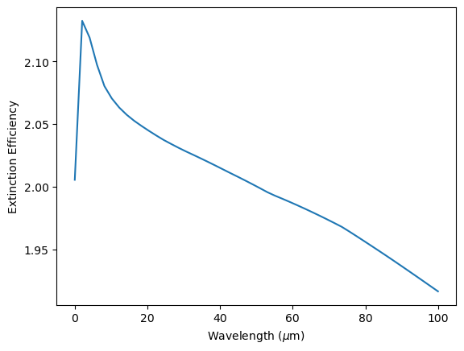

Tutorials
Here we show how to use full calculations and the auto_efficiencies function.
Full Calculations
MieNet’s full calculations utilizes Mie theory, a mixing theory (either LLL or Bruggeman approximation), and a radius averaging scheme to calculate the extinction, scattering, and asymmetry coefficients.
[1]:
import matplotlib.pyplot as plt
import numpy as np
from mienet import MieNet
# determine model inputs
species = ['CH4', 'NH3']
wavelength_range = np.linspace(0.1, 100, 50) # microns
radius_range = np.linspace(0.01, 10, 50) # microns
vmrs = {
'CH4': 0.5 * np.ones_like(radius_range),
'NH3': 0.5 * np.ones_like(radius_range)}
# initialize MieNet
ma = MieNet(use_ai=False) # if not using ai functionalities, set use_ai to False to decrease initialization time
# predict efficiencies
qext, qsca, asym = ma.efficiencies(wavelength_range, radius_range, vmrs)
# plot results
plt.figure()
plt.plot(wavelength_range, np.mean(qext, axis=0))
plt.xlabel(r'Wavelength ($\mu$m)')
plt.ylabel('Extinction Efficiency')
plt.show()

Auto Efficiencies
The auto_efficiencies function will use the fastest method available (AI models, grid, or full calculations) to calculate the Mie coefficients.
[3]:
import matplotlib.pyplot as plt
import numpy as np
from mienet import MieNet
# determine model inputs
species = ['TiO2', 'Fe']
wavelength_range = np.linspace(0.01, 100, 50) # microns
radius_range = np.linspace(0.001, 100, 50) # microns
vmrs = {
'TiO2': 0.5 * np.ones_like(radius_range),
'Fe': 0.5 * np.ones_like(radius_range)}
# initialize MieNet
ma = MieNet()
# predict efficiencies
qext, qsca, asym = ma.auto_efficiencies(wavelength_range, radius_range, vmrs)
# plot results
plt.figure()
plt.plot(wavelength_range, np.mean(qext, axis=0))
plt.xlabel(r'Wavelength ($\mu$m)')
plt.ylabel('Extinction Efficiency')
plt.show()

[ ]: